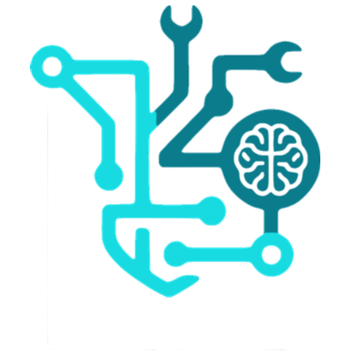

Dear TechSoup Hiring Team,
I am writing to apply for the Support Engineer position with TechSoup. After more than forty-five years running my own remote IT practice, Lindell and Associates, I've spent every week doing the exact work this role describes: owning the end-to-end support experience for a diverse client portfolio, resolving escalations no one else has solved, and building the documentation and workflows that keep small organizations running. TechSoup's mission — equipping the nonprofit sector with the technology it needs to serve its communities — is the kind of work I would be proud to pour the next chapter of my career into.
For decades I have essentially operated as a one-person MSP for real estate firms, law offices, healthcare providers, property management companies, and retail businesses across the Yakima Valley and beyond. That means I have carried, day in and day out, the same responsibilities the Support Engineer role asks for: triaging and closing tickets, owning Tier 2/3 escalations, coordinating with vendors, documenting SOPs, and coaching non-technical users. My clients have stayed with me for ten, fifteen, sometimes twenty years — a testament to the reliability, responsiveness, and calm-under-pressure that I believe are the true differentiators in senior IT support.
How my background maps to what TechSoup needs:
Beyond the technical fit, TechSoup's values resonate deeply with how I've run my practice. Promote Trust is the quiet foundation of every fifteen-year client relationship I've kept. Be Resourceful is the daily posture of a solo consultant. And Be Relevant is why I keep learning — the industry that hired me in the 1980s is not the industry I serve today, and I've made sure my skills evolved with every wave. I am also entirely comfortable with distributed, asynchronous collaboration, structured written communication, and the occasional maintenance window or on-call rotation; my entire delivery model is already fully remote.
I would welcome a conversation about how my depth of experience, MSP-style ownership, and customer-first approach could strengthen the Support Engineer function at TechSoup. Thank you for your time and consideration — I look forward to hearing from you.
Sincerely,